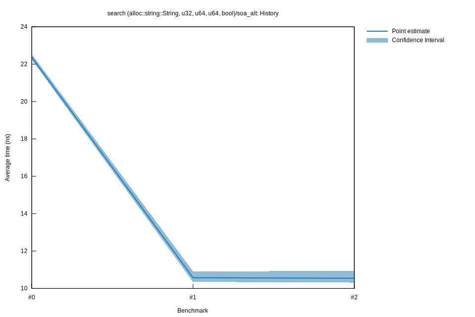

# 22023-02-24T22:45:53+01:00
|
Lower Bound |
Estimate |
Upper Bound |
| Value: |
10.31ns |
10.55ns |
10.94ns |
| Throughput: |
96.95Melem/s |
94.82Melem/s |
91.43Melem/s |
| Change in Value: |
-9.3542% |
+15.782% |
+52.204% |
| Change in Throughput: |
+10.319% |
-13.631% |
-34.299% |
Change within noise threshold.
# 12023-02-24T16:31:10+01:00
|
Lower Bound |
Estimate |
Upper Bound |
| Value: |
10.35ns |
10.57ns |
10.91ns |
| Throughput: |
96.60Melem/s |
94.57Melem/s |
91.63Melem/s |
| Change in Value: |
-54.972% |
-51.700% |
-46.994% |
| Change in Throughput: |
+122.08% |
+107.04% |
+88.657% |
No change in performance detected.
# 02023-02-24T15:59:38+01:00
|
Lower Bound |
Estimate |
Upper Bound |
| Value: |
22.24ns |
22.37ns |
22.53ns |
| Throughput: |
44.96Melem/s |
44.70Melem/s |
44.38Melem/s |